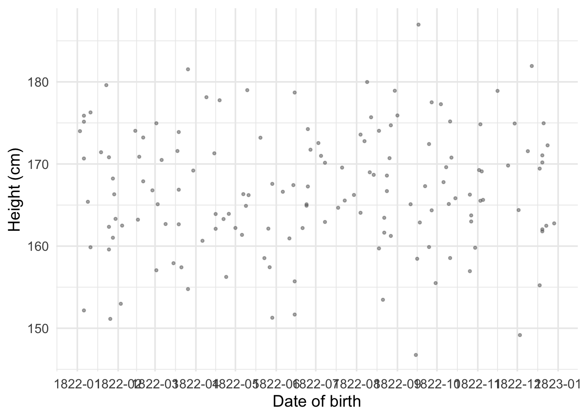

| Individual | Height (cm) | Gender | DOB |
|---|---|---|---|
| 1 | 177.44 | M | 1826-10-28 |
| 2 | 167.63 | M | 1829-05-14 |
| 3 | 176.31 | M | 1829-02-20 |
| 1517 | 162.86 | F | 1824-01-18 |
Imagine we are conducting an anthropometric study using a dataset of 1,517 heights recorded in 1850
1,215 have recorded gender as male and 302 as female
For each record we also measure the person’s date of birth
We want to understand the relationship between height, gender, and date of birth
We can think of regression as a way of comparing averages (Gelman, Hill, and Vehtari 2020)
| Individual | Height (cm) | Gender | DOB |
|---|---|---|---|
| 1 | 177.44 | M | 1826-10-28 |
| 2 | 167.63 | M | 1829-05-14 |
| 3 | 176.31 | M | 1829-02-20 |
| 1517 | 162.86 | F | 1824-01-18 |
We can calculate averages separately by gender:
\[ \text{Avg}_M = \sum_{i=1}^{1215} \frac{h_i}{1215} \qquad \text{Avg}_F = \sum_{i=1}^{302} \frac{h_i}{302} \]
Assume the standard deviation of men’s and women’s heights is the same value \(\sigma\)
Standard error of male heights: \(\sigma_M = \frac{\sigma}{\sqrt{1215}} \approx \frac{\sigma}{35}\)
Standard error of female heights: \(\sigma_F = \frac{\sigma}{\sqrt{302}} \approx \frac{\sigma}{17}\)
Our measure of male heights is about 2 times as accurate as our measure of female heights
This occurs simply because we observe fewer women in the data
Figure 1: Heights by gender. Red points and error bars show the mean \(\pm\) 2 standard errors.
What if we want to calculate the average by date of birth?
Figure 2: Individual heights plotted against date of birth in 1822.
If we reduce DOB to the year of birth we can calculate an average, but it is less precise
At the year-and-month level it becomes almost impossible
At the actual day of birth most days have 1 or no observations
We need an approach that uses all of the observed data and generalizes to any date
Let’s shift perspective: consider a date we have no observations for
What is a good strategy for guessing the average height at this date?
Figure 3: Average height by week. Point size indicates the number of observations.
Say we observe average heights for February 1822 and April 1822
A reasonable guess for March 1822:
\[ \hat{h}_{1822\text{-Mar}} = h_{1822\text{-Feb}} + \frac{h_{1822\text{-Apr}} - h_{1822\text{-Feb}}}{t_{1822\text{-Apr}} - t_{1822\text{-Feb}}} \]
The individual monthly observations are based on few observations — they may not be very accurate
We observe many data points — how do we include all of them?
What if we are missing two observations in a row?
We are working with time averages but really we see the day people are born
We need an approach that:
The best case: so many observations per date that we could calculate the average for each day
This would be the conditional average: the average conditional on the day a person was born
We don’t have enough data for this, but at least we know our goal is a conditional average
Solution: calculate an average that depends on the date and a very small number of unknown parameters
Linear regression computes a linear approximation to the conditional average.
The word linear means:
The relationship is the same no matter what time period we look at: moving from 1822-02-10 to 1822-02-20 has the same effect as moving from 1823-02-10 to 1823-02-20
The relationship between the outcome and the predictor is governed by a single parameter
\[ h_i = \alpha + \beta \, d_i + \varepsilon_i \]
\(h_i\): the height of individual \(i\) (one of 1,517 observations)
\(d_i\): the date of birth, expressed in decimal years
\(\alpha\): the intercept — the predicted average height when \(d_i = 0\)
\(\beta\): the slope — the predicted change in average height for a one-year increase in DOB
\(\varepsilon_i\): the error term — the deviation of a person’s height from the average height of someone born on their birthday
We estimate \(\alpha\) and \(\beta\) by minimizing the sum of squared errors:
\[ \min_{\alpha,\,\beta} \sum_{i=1}^{1517} \varepsilon_i^2 \]
where
\[ \varepsilon_i^2 = (h_i - \alpha - \beta \, d_i)^2 \]
We pick the values of \(\alpha\) and \(\beta\) that make the squared deviations as small as possible
There are closed form solutions to this model (you cold solve by hand) but your computer can do it trivially.
Figure 4: Height versus date of birth with OLS regression line and 95% confidence band.
The slope \(\hat\beta\) is 0.119 cm per year of birth — slightly positive
What if we predict height for someone born on 2026-01-01?
\[ \hat{h}_{2026\text{-}01\text{-}01} = \hat\alpha + \hat\beta \, d_{2026\text{-}01\text{-}01} \]
Our prediction: 191.9 cm — much too tall for average height!
The linear relationship holds across the dates we observe, but the machine can predict at any date
Predictions become less reliable the farther we move from observed dates
This is called predicting off the support of the distribution
An important distinction:
Errors \(\varepsilon_i = h_i - \alpha - \beta \, d_i\): the difference between a person’s height and the true conditional average. We never observe these because we never know the true \(\alpha\) and \(\beta\).
Residuals \(\hat\varepsilon_i = h_i - \hat\alpha - \hat\beta \, d_i\): the difference between observed heights and the estimated regression line. We do observe these.
The residuals are our best available stand-in for the unknown errors
Our measures of uncertainty are themselves estimates, built from residuals rather than true errors
The regression coefficients come from a sample and are therefore uncertain
Just as with a mean, we need a standard error
Recall: for the sample mean \(\bar{h}\), the standard error is
\[ \text{SE}(\bar{h}) = \frac{\hat\sigma}{\sqrt{n}} \]
The standard error for a regression slope follows the same logic:
\[ \text{SE}(\hat\beta) = \sqrt{\frac{\hat\sigma^2}{\sum_{i=1}^{n}(d_i - \bar{d})^2}} \]
where \(\hat\sigma^2 = \frac{1}{n-2}\sum_{i=1}^{n}\hat\varepsilon_i^2\)
Numerator: how noisy the data are around the regression line
Denominator: how spread out the predictor is along the x-axis
A regression slope measures a rate of change (cm per year of DOB)
To pin down a rate of change, what matters is not just how many people we observe but how spread out they are along the x-axis
Two datasets, both with 1,000 observations:
The second dataset is far more informative about the slope
\(\sum(d_i - \bar{d})^2\) captures this: larger when dates are more spread out, making \(\text{SE}(\hat\beta)\) smaller
\[ \hat\beta \pm 2 \times \text{SE}(\hat\beta) \]
If we repeated our study many times, approximately 95% of these intervals would contain the true value of \(\beta\)
Any single interval either contains the truth or it doesn’t, but the procedure is right 95% of the time
When zero falls inside the interval: data are consistent with no relationship
When zero falls outside the interval: data suggest the true slope is different from zero
\[ t = \frac{\hat\beta}{\text{SE}(\hat\beta)} \]
How many standard errors our estimate is away from zero
Rule of thumb: \(|t| > 2\) means “statistically significant” at conventional levels
Equivalent to saying zero lies outside the 95% confidence interval
A coefficient of 0.5 with SE of 0.1 (\(t = 5\)) is much more convincing than a coefficient of 0.5 with SE of 0.4 (\(t = 1.25\))
| Height (cm) | |
|---|---|
| Intercept | −49.120 |
| (118.754) | |
| Date of birth (year) | 0.119* |
| (0.065) | |
| Num.Obs. | 1517 |
| R2 | 0.002 |
| * p < 0.1, ** p < 0.05, *** p < 0.01 |
Coefficient estimates: each row is a variable; the number is the point estimate
Standard errors in parentheses: below each coefficient, indicating precision
Stars: * means \(p < 0.1\), ** means \(p < 0.05\), *** means \(p < 0.01\)
Intercept: predicted height when DOB = 0 (not meaningful here, but necessary)
\(R^2\): how much variation in height is explained by DOB alone (close to 0 = very little)
Num.Obs. (\(N\)): the number of observations
We can include both DOB and gender in a multiple regression:
\[ \text{height}_i = \alpha + \beta_1 \cdot \text{dob}_i + \beta_2 \cdot \mathbf{1}[\text{female}_i] + \varepsilon_i \]
\(\mathbf{1}[\text{female}_i]\) is an indicator variable (equals 1 if female, 0 if male)
For a male: predicted height is \(\alpha + \beta_1 d\)
For a female: predicted height is \(\alpha + \beta_1 d + \beta_2\)
\(\beta_2\) measures the average height difference for females relative to males
Multiple regression estimates each coefficient holding the other variables constant:
\(\beta_1\): the effect of DOB on height holding gender constant — comparing people of the same gender born at different dates
\(\beta_2\): the average height difference for females relative to males holding DOB constant — comparing men and women born at the same time
Figure 5: How multiple regression isolates the DOB effect after removing gender. Panel A: raw data coloured by gender, with group means marked. Panel B: after subtracting each group’s mean height, the two clouds overlap vertically; group mean DOB is marked. Panel C: after also subtracting each group’s mean DOB, the data are centred at the origin. Panel D: the regression slope through the doubly-residualized data equals \(\hat\beta_1\) from the multiple regression.
Panel A: Raw data coloured by gender, with group mean heights marked
Panel B: After subtracting each group’s mean height, the two clouds overlap vertically
Panel C: After also subtracting each group’s mean DOB, both variables are “cleaned” of gender
Panel D: The regression slope through this doubly-residualized data equals \(\hat\beta_1\) from the multiple regression (Frisch-Waugh-Lovell theorem)
Multiple regression is, at its core, about comparing like with like
| (1) | (2) | |
|---|---|---|
| Intercept | −49.120 | −141.882 |
| (118.754) | (100.340) | |
| Date of birth (year) | 0.119* | 0.171*** |
| (0.065) | (0.055) | |
| Female | −10.739*** | |
| (0.434) | ||
| Num.Obs. | 1517 | 1517 |
| R2 | 0.002 | 0.289 |
| R2 Adj. | 0.002 | 0.288 |
| * p < 0.1, ** p < 0.05, *** p < 0.01 |
DOB coefficient increases from (1) to (2): the simple regression was attenuated by mixing men and women. The standard error falls because including gender shrinks the residuals.
Female coefficient is large and negative: the well-known average height difference between men and women. Statistically significant at the 1% level.
\(R^2\) jumps substantially: DOB alone explains little, but adding gender explains the ~10 cm gap between men and women.
Adjusted \(R^2\) penalizes for number of predictors. When it rises meaningfully, the added variable genuinely improves fit.
Regression is a way of comparing averages — it computes a linear approximation to the conditional mean
OLS picks the line that minimizes the sum of squared errors
Standard errors tell us about the precision of our estimates
Multiple regression estimates each coefficient holding other variables constant
Always check: is the relationship linear? Are you predicting off the support?